Металлы
Раздел «Металлы» энциклопедии SUNLIGHT: 16 материалов с разбором деталей и советами по выбору.
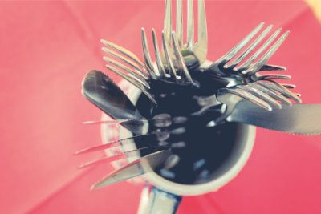
18.08.2021 Какая проба у столового серебра и что значат другие маркировкиСеребро – самый дешевый металл из тех, что наделены правом именоваться драгоценными. Ювелирные изделия из серебра...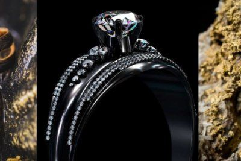
29.04.2021 Что такое чёрное золото, преимущества металлаЧто мы знаем о золоте? Как минимум то, что это – элемент периодической таблицы Менделеева. Несмотря на то что...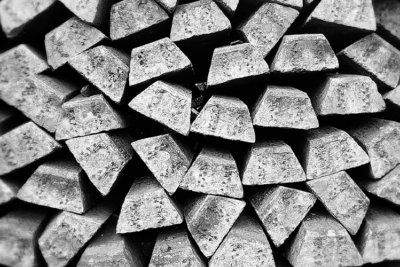
05.03.2021 Как и где добывают серебро: особенности добычиСеребро – тот металл, который наравне с золотом известен людям еще с додинастического периода. В то время как...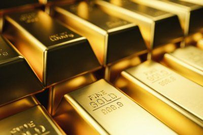
05.03.2021 Золото 999 пробы: что это такое, сколько стоит, для чего используетсяПринято считать, что чем проба драгметалла выше, тем лучше: недаром часто говорят «чистое золото», подразумевая под...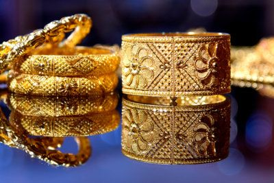
05.03.2021 958 проба золота: особенности и характеристикиТакая проба золота в России практически не используется ввиду своей мягкости и довольно низкой износостойкости. В...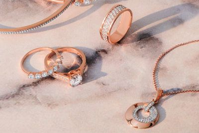
05.03.2021 Золото 750 пробы: особенности драгоценного металаЭта проба золота сегодня – лидер по продажам среди ювелирных украшений в Европе. Если говорить о содержании чистого...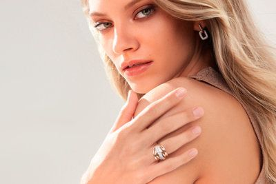
05.03.2021 Чем отличается 583 проба золота от 585На сегодняшний день самым распространенным и самым широко используемым видом золота является золото 585 пробы....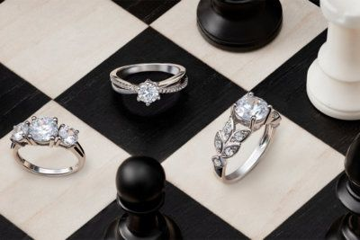
05.03.2021 Пробы золота и других благородных металловТакое определение как ‘проба благородных металлов’ является одним из основополагающих в ювелирном деле. Говоря...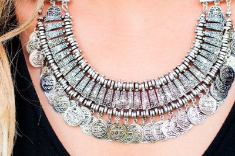
05.03.2021 Что нужно знать о серебре 925 пробыНа сегодняшний день на ювелирном рынке существует такое понятие как 925 проба. Многие склонны относить ее к золоту....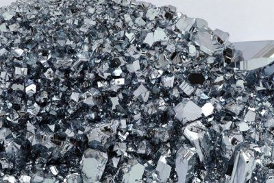
11.12.2019 Что такое платина, свойства драгоценного металла и его применение«Плохое серебро» или «серебришко» — такое название получила платина, когда с ней впервые столкнулись европейцы....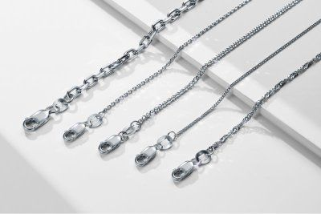
29.07.2019 Как отличить серебро от подделки: проверка серебра в домашних условияхЕсли вы вдруг стали счастливым обладателем фамильного серебра, купили симпатичную безделушку на блошином рынке или...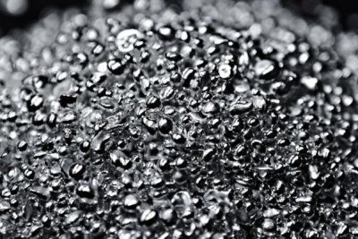
25.07.2019 Какие бывают пробы серебра для изготовления ювелирных и серебряных изделийКакие бывают пробы серебра Серебро — благородный металл, отличающийся высокой пластичностью. Изделия из него не...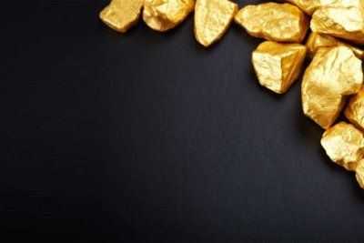
24.07.2019 Какие бывают пробы золота в ювелирных изделиях, стоимость золота 585 пробы в РоссииВиды проб золота Все мы знаем о таком благородном металле, как золото. Оно считается одним из самых ценных ресурсов...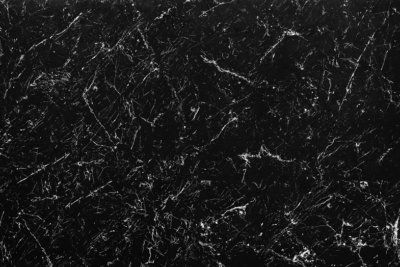
03.06.2019 История и свойства чёрного золотаЧто мы знаем о золоте? Как минимум то, что это – элемент периодической таблицы Менделеева. Несмотря на то что...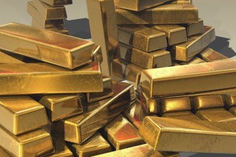
28.05.2019 Золото: характеристики, виды и пробыЗолото считается редким благородным металлом, который на протяжении тысячелетий используется людьми не только для...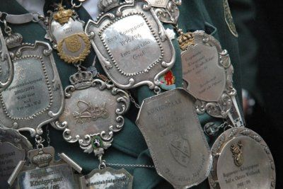
16.05.2019 Все о серебре: интересные факты о металлеС древности, окруженный мистическими легендами, серебро всегда относили к полезным для человека веществам. В древнем...